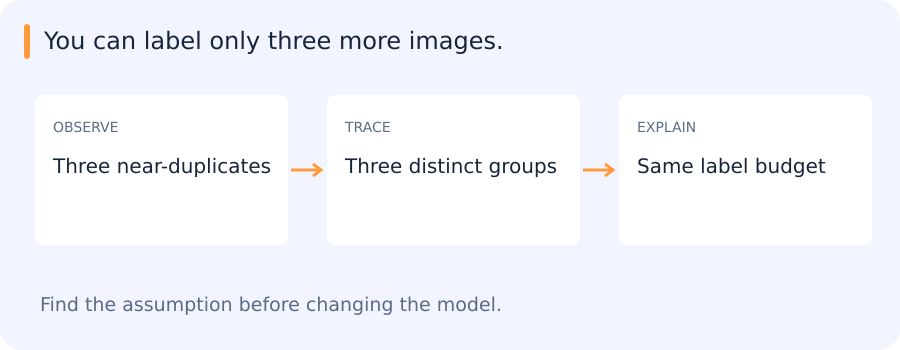

Your model finds common trucks, but reviewed examples of cement trucks are scarce. You have to decide what to label, how to use the labels and what prediction the result should make. Those decisions change the learning setup even if you keep the same encoder. This chapter assumes the basic distinction between features, targets and fitted models. ML foundations
Jump to a concept
Choose the target structure
Multiclass classification chooses among mutually exclusive labels. Multilabel classification permits multiple labels per example and needs both per-label and per-example evaluation. Multiple-output regression predicts several numerical targets. A sequence-labeling system emits a label per token or time step, while sequence-to-sequence learning produces an output sequence with a potentially different length. Input/output structure determines losses, masks and metrics; replacing a final layer alone may not define the correct task.
Self-check
A clip can contain both a road and an outdoor scene. How should those two targets be represented?
- A. Two labels that can independently be present
- B. A single mutually exclusive two-class label
- C. An unlabeled cluster index
- D. One continuous price prediction
Show answer and explanation
A. Two labels that can independently be present
The two properties can co-occur. A multilabel target permits both to be present in one example.
Limited supervision
Active learning chooses which examples to label next, often using uncertainty, diversity or expected gain. Uncertainty-only selection can oversample outliers and overlook confidently wrong regions. Evaluate label efficiency on independent data and retain random sampling as an audit. Semi-supervised learning combines labeled and unlabeled observations through assumptions such as smoothness, consistency or low-density class boundaries. Pseudo-label thresholds can reinforce existing biases; unlabeled data is not guaranteed to improve a misspecified task.
One-shot/few-shot learning uses very few labeled supports for a new task or class. Meta-learning can optimize adaptation across tasks, while pretrained embeddings with prototypes are a simpler alternative. Zero-shot learning uses semantic descriptions or other transferable supervision without task-class examples in the declared adaptation set. Clarify whether “unseen” means unseen during a small adaptation run or unseen anywhere in pretraining. Test novel categories and acquisition conditions separately.
Choose three labels from a correlated pool
Imagine six uncertain crops. Four are adjacent frames of the same cement truck, one is a partly occluded crane truck and one is an unusual road sign. If you label the three most uncertain frames and all belong to the same truck, the model receives repeated information about one object. If you use the three labels on separate groups, you can investigate a broader set of errors. That is useful when the goal is coverage of failure modes. If the deployment question is how one specific truck behaves over a sequence, the repeated frames can instead be useful evidence.
Sampling strategy changes the distribution of reviewed data. Cases selected for uncertainty are not a representative estimate of overall error. Keep a separate random or deployment-matched audit for evaluation. Use the selected labels for training, and record the selection policy so any improvement can be interpreted.
Choosing the next few examples to label
You have time to label three more images. The three most uncertain predictions are almost identical crops from one video; other candidates cover several different failure groups. Choosing solely by uncertainty may spend the whole budget on nearly the same case.

Active learning treats the choice of observations as part of the learning process. Diversity, representativeness and the cost of annotation can matter alongside uncertainty. A small random audit remains useful because a model can be confidently wrong in a region it never asks anyone to label.
The learning setups below make different assumptions about which labels and relationships are available.
Self-check
Most uncertain examples are adjacent crops of one truck. Your labeling goal is to cover distinct failure modes. Which change fits that goal?
- A. Always select the highest three uncertainties
- B. Spread the selected labels across distinct sources or error groups
- C. Label only crops with the largest boxes
- D. Treat uncertain predictions as verified negatives
Show answer and explanation
B. Spread the selected labels across distinct sources or error groups
Selecting for diversity reduces repeated review of nearly identical evidence. A representative audit is still needed to estimate overall error.
One-class and anomaly detection
One-class methods model accepted/normal observations and score departures. Density estimation, one-class SVMs, isolation approaches and reconstruction-based methods define normality differently. A high-dimensional Gaussian can have most of its probability mass far from its mean; density at a point is not an intuitive universal typicality score. Set thresholds against the operational false-alarm budget and a representative reference population. New legitimate conditions may look anomalous.
Metric learning, ranking and recommendation
Metric learning shapes a space so selected relationships correspond to distance or similarity. Pair/triplet construction defines the supervision and can leak identity or acquisition context. Learning to rank optimizes ordering, with pointwise relevance, pairwise comparisons or listwise objectives. Recommendation adds user/item interaction data, exposure effects and cold-start constraints. A missing interaction is not always a negative preference: a user may never have seen an item.
Market-basket analysis finds co-occurring items. Support measures how often an itemset appears; confidence estimates a conditional frequency; lift compares that confidence to the consequent's base frequency. A high-confidence rule can merely predict a very common item. Co-occurrence is not causality, and repeated exploratory searches need independent validation. These ideas were present in the legacy primer even though they are not required current projects.
Multiple inputs, outputs and losses
Combining image, metadata and text can improve predictions but also introduces missingness, synchronization and leakage risks. A multi-task network shares some parameters and has task-specific outputs. Loss weights, sampling frequencies and gradient scales determine which task dominates. Apparent regularization from auxiliary supervision can disappear if the auxiliary target leaks the main answer. Evaluate each output and relevant subgroups, not only a weighted training objective.
Reading the broader learning setups
The older broad syllabus included these topics without making each one a separate project. They remain useful vocabulary for choices that arise in motion classification, rescoring and retrieval. For a role-specific extension, the useful depth is enough to explain the supervision available, the method’s main assumption and a case in which that assumption fails.
Original source references and provenance
Original teaching text covering the cited topics, not a verbatim mirror. These references are provenance; no external reading is required to use this chapter.